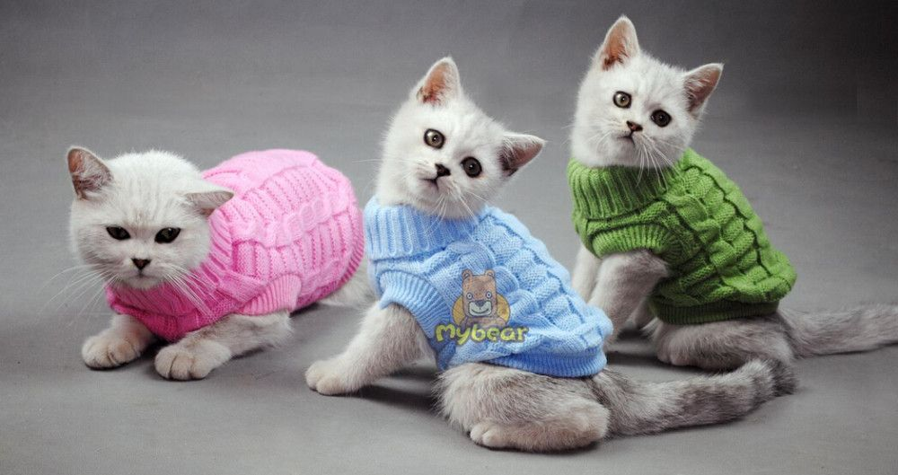
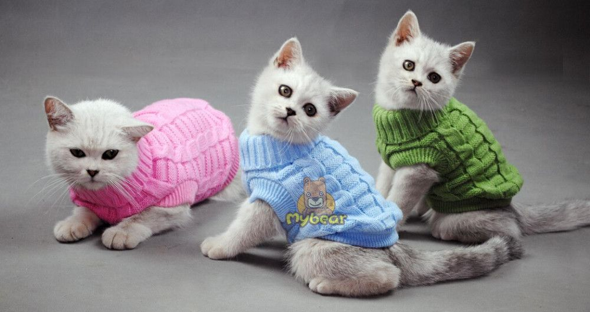

Cuidados com animais de estimação durante o frio
Com a queda brusca na temperatura nas últimas semanas, o alerta e a preocupação com os animais de estimação aumentam, principalmente com animais que tem maior dificuldade para controlar a temperatura, como é o caso de filhotes e animais mais idosos.Confira os principais cuidados:
- Providenciar cobertor e roupa para aquecê-lo, se necessário;
- Banhos com água morna e em locais sem corrente de ar;
- Procurar o veterinário de confiança em caso de crises articulares;
- Fazer apenas a tosa higiênica;
- Passeios em horários mais quentes, de preferência quando tiver sol.